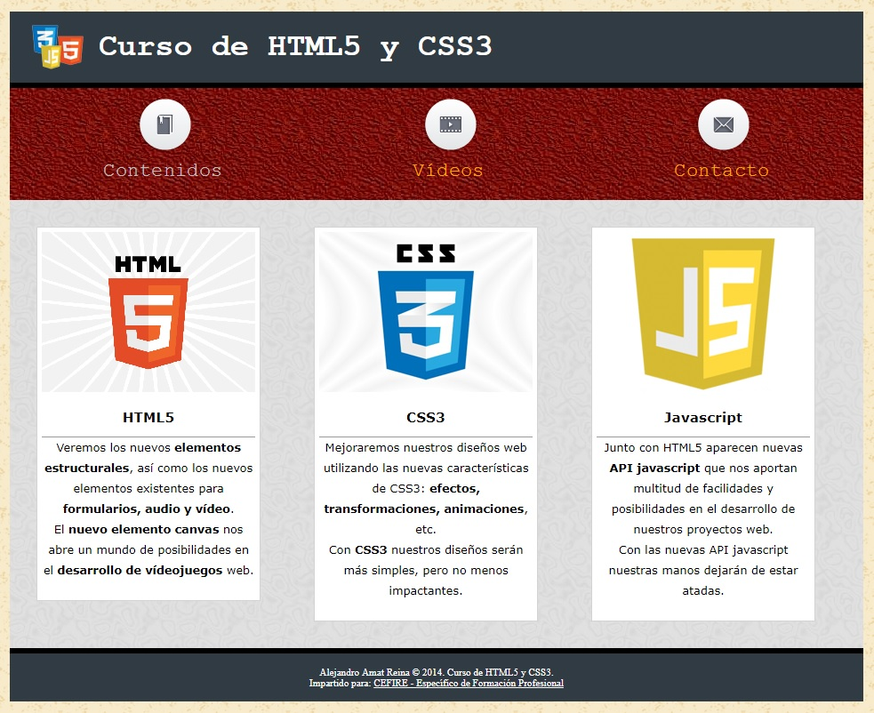

UD2 Pràctica Maquetació
Maquetació web
Partint dels arxius que es proporcionen a la plataforma, confecciona el CSS per tal d'obtindre un resultat com el següent:

L'estructura de la pàgina serà pràcticament igual a la de l'exercici anterior, la podeu veure en el fitxer index.HTML, tindrem un <div id="page"> que serà el contenidor de tota la pàgina, i dins d'aquest, tindrem els següents
elements:
- Un
<div id="header">que contindrà un<h1>amb el títol de la pàgina. - Un
<div id="nav">que contindrà una llista desordenada amb els enllaços del menú de navegació. - Un <div id="content"> que contindrà tres
<div class="article">. Cada<div class="article">contindrà un<div class="article_header">que, al seu torn, contindrà una imatge i un<h2>amb el títol de l'article. El<div class="article">també contindrà un parell de paràgrafs de text. Després del<div id="content">tenim un<div id="footer">amb el peu de pàgina que contindrà un paràgraf de text.
Si visualitzeu el fitxer index.html en el vostre navegador, observareu que la pàgina no apareix com es mostra en la imatge. Això és perquè el fitxer estils.css de la carpeta *css està buit. El que heu de fer en aquest exercici és completar els estils necessaris perquè la pàgina es mostre com s'espera.
A continuació, veurem els estils que hem de crear:
- Utilitzant el selector universal, configurarem a *0px el marge intern i extern de tots els elements.
Element <body>:
- Marge intern superior 20px.
- Text alineat al centre.
- Imatge de fons "../imgs/old_map.png". Per a canviar la imatge de fons d'un element, utilitzarem la propietat
background-image.
Com el fitxer d'estils està en la carpeta css i les imatges en la carpeta imgs, haurem d'indicar la ruta relativa des del lloc on estan els estils fins al lloc on estan les imatges, en
aquest cas "../imgs/old_map.png". Quan indiquem la ruta d'unrecurs en un fitxer d'estils, hem d'utilitzar la funció *url, per tant, per a canviar la imatge de fons, farem el següent:
background-image: url("../imgs/old_map.png");
Element page:
- Tindrà un ample de *960px.
- Els marges superior i inferior seran de *0px, mentre que l'esquerre i dret seran automàtics.
- El text estarà alineat a l'esquerra.
Element header:
- La font *Courier de color blanc i grandària 1em2.
- La vora inferior tindrà 6px, serà negre i d'estil sòlid.
- El color de fons serà #313B44.
Si observem la capçalera de la pàgina, al costat del títol de la mateixa apareix una imatge amb els logos de html, CSS i javascript.
Veiem que en l'arxiu index.html no tenim cap element <img>, així que, podem deduir que aquesta imatge es troba en els estils de la pàgina. En general, quan una imatge té més relació amb l'aspecte visual de la pàgina que amb els continguts d'aquesta, la introduirem sempre per mitjà dels estils.
Vegem com hem de configurar els estils de l'element <h1> per a aconseguir aquesta aparença:
- La imatge de fons serà "../imgs/logo.png".
- Per defecte, quan col·loquem una imatge de fons xicoteta en un element més gran, la imatge es repetirà en mosaic fins a emplenar tot l'element. Per a controlar aquest comportament disposem de la propietat
background-repeat. Com en aquest cas ens interessa que la imatge no es repetisca, assignarem el valorno-repeat. Per a més informació sobre aquesta propietat, podeu consultar la w3school. - Quan una imatge de fons no es repeteix, podem indicar en quina posició volem que aparega utilitzant la propietat
background-position. En aquest cas, ens interessa que aparega desplaçada 25px a l'esquerra i centrada verticalment, per tant, indicarem els següents valors:background-position: 25px center;. Per a més informació sobre aquesta propietat, podeu consultar la w3school.
Problema amb els píxels
| Text Only | |
|---|---|
1 2 | |
Si observem la pàgina en aquest moment, veurem que el text de l'element <h1> es col·loca sobre la imatge de fons, la qual cosa, no és molt apropiat. Per a solucionar aquest problema, li posarem uns marges interns superior i inferior de 20px i uns marges
interns esquerre i dret de 100px.
Element nav:
- La font serà
courierde grandària 1.4em i color silver. - El text estarà alineat al centre.
- La imatge de fons serà una textura que es repetirà fins a emplenar tot l'element: "../imgs/red015.jpg".
Vegem ara com canviarem la llista d'enllaços que es troba dins de l'element *nav perquè prenga l'aspecte que ens interessa:
- Per als elements
<li>de la llista desordenada tindrem una part comuna per a tots ells i una altra individual, ja que, cada opció de menú té una imatge diferent. Per aquest motiu, hem posat un id a cadascun d'ells. Vegem, en primer lloc, els estils comuns que tenen els<li>que estan dins delnav: - Necessitem tindre espai suficient perquè ens càpien les imatges de cadascun dels enllaços, per tant, li posarem un marge intern superior de 80px.
- Els marges externs els configurarem de la següent forma: superior 0px, dret 100px, inferior 20px i esquerre 100px.
- Eliminarem el
bulleto vinyeta que col·loca el navegador per defecte en les llistes. - Els col·locarem en posició horitzontal convertint-los en elements
inline-block. - El text estarà centrat.
Inline o Block
| Text Only | |
|---|---|
1 | |
- Col·locarem el cursor per defecte perquè quan situem el ratolí sobre l'element sense enllaç aparega el cursor adequat.
- En cadascun dels elements
- hem de col·locar la imatge adequada, per a això, utilitzarem els identificadors dels mateixos per a seleccionar-los:
Element continguts:
- Imatge "../imgs/book.png", eliminar repetició i posició centrada horitzontalment i a 10px de la vora superior.
Element vídeos:
- Imatge "../imgs/film.png", eliminar repetició i posició centrada horitzontalment i a 10px de la vora superior.
Element contacte:
- Imatge "../imgs/mail.png", eliminar repetició i posició centrada horitzontalment i a 10px de la vora superior.
Per als enllaços:
- Eliminarem el subratllat.
- Color de la font
orange. - Color de la font quan el ratolí està sobre ells *white.
Element content:
- Font verdana de grandària 0.8em.
- Imatge de fons "../imgs/lgrey008.jpg".
Elements de la classe article:
- Ample de 240px.
- Vora de 1px color lightgray i estil sòlid.
- Color de fons white.
- Text alineat al centre.
- Alt de línia de 1.8em (propietat
line-height). - Els marges interns els configurarem de la següent forma: esquerre, dret i superior 5px, inferior 22px.
- Els marges externs seran de 30px.
- Els elements d'aquesta classe han de col·locar-se un al costat de l'altre, per tant, indicarem que suren a l'esquerra. Si observem la pàgina després de posar els elements article flotants, veiem que ha desaparegut la textura de l'element *content. És com si aquest element haguera passat a tindre un alt de 0px. Això ocorre perquè, en contindre només elements flotants, l'element content pensa que està buit. Anteriorment, per a solucionar aquest problema, bastava
amb posar els estils
overflow: hidden; iheight: 1%;a l'elementcontent. Per a més informació podeu consultar el següent enllaç. Però, en realitzar algunes proves amb Internet Explorer 11 m'he trobat amb alguns problemes, així que utilitzarem la solució que es proposa en la següent enllaç. En concret, el que farem serà construir els estils de l'elementcontentde la següent forma:
floats funcionarà en tots els navegadors moderns.
Elements de la classe article_header:
- Vora inferior de 1px sòlid i color #999999.
Elements <h2>:
- Marges interns 10px.
- Grandària de font 1.2em.
Element footer:
- Haurà de col·locar-se davall dels elements flotants.
- Font de color white i grandària 0.7em.
- Text alineat al centre.
- Color de fons #313B44.
- Vora superior de 6px color black i sòlid.
- Marges interns superior i inferior de 15px.
Enllaços que es troben dins de l'element footer:
- Color de font blanc.
Amb això hauríem acabat l'exercici i hauria de visualitzar-se la pàgina web tal com apareix en la imatge.